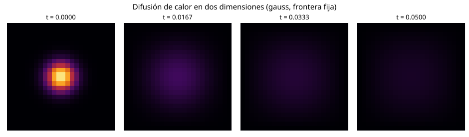

Ecuación de calor en dos dimensiones
Problema y método
Se resuelve la difusión de temperatura en una placa rectangular:
Se usan diferencias finitas centradas en el espacio y Euler explícito en el tiempo (FTCS):
Aquí \(r_x=\alpha\Delta t/\Delta x^2\) y \(r_y=\alpha\Delta t/\Delta y^2\). El paso temporal cumple \(r_x+r_y\leq 1/2\), con factor de seguridad 0.9.
Parámetros disponibles
| Parámetro | Valores |
|---|---|
| Condición inicial | gauss, doble, seno |
| Frontera | fija (temperatura cero) o aislada (flujo cero) |
| Malla | nx, ny (desde 3 puntos por eje) |
| Tiempo | Valor positivo |
| Difusividad y dimensiones | Constantes ALFA, LX, LY al inicio del código |
| Paralelismo en C++ | Número de hilos OpenMP |
En la frontera aislada se repite el valor de la celda del borde para representar flujo discreto nulo.
Ejecución
Instalar las bibliotecas:
pip install -r requirements.txt
Python: solución y cuatro mapas de temperatura.
python calor.py gauss fija 81 81 0.05
python calor.py doble aislada 81 81 0.05
C++: mismo esquema, un hilo o varios hilos con memoria compartida.
g++ -O2 -fopenmp calor.cpp -o calor
./calor gauss fija 81 81 0.05 1
./calor gauss fija 81 81 0.05 4
La aceleración se calcula como \(S=T_1/T_p\) a partir de los tiempos mostrados por el programa. Para problemas pequeños el paralelismo puede resultar más lento debido al costo de los hilos.
Mapas de calor
Los mapas de temperatura se regeneran al ejecutar calor.py. Ejemplo de evolución:

Documentación
La página utiliza MkDocs Material, como la tarea de cuadratura gaussiana. Para consultarla localmente:
mkdocs serve
La documentación se prepara con MkDocs Material y se publica mediante la rama gh-pages cuando GitHub Pages está habilitado en el repositorio.